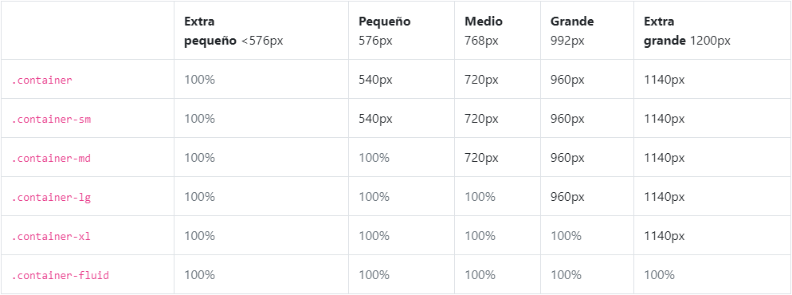
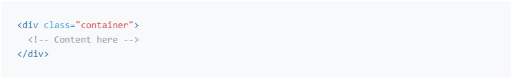
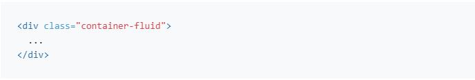
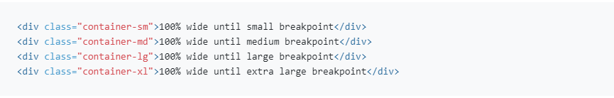

Visión general
Componentes y opciones para diseñar el proyecto Bootstrap, incluidos contenedores de envoltura, un potente sistema de cuadrícula, un objeto multimedia flexible y clases de utilidad adaptables.

Contenedores
Los contenedores son el elemento de diseño más básico en Bootstrap y son necesarios cuando se utiliza nuestro sistema de cuadrícula predeterminado. Los contenedores se utilizan para contener, rellenar y (a veces) centrar el contenido dentro de ellos. Aunque los contenedores se pueden anidar, la mayoría de los diseños no requieren un contenedor anidado.
Bootstrap viene con tres contenedores diferentes:
- .container, que establece un punto de interrupción en cada punto de interrupción responsivo max-width
- .container-fluid, que es en todos los puntos de interrupción width: 100%
- .container-{breakpoint}, que es hasta el punto de interrupción especificado width: 100%
La tabla siguiente ilustra cómo se compara cada contenedor con el original y a lo largo de cada punto de interrupción .max-width.container.container-fluid
Véalos en acción y compárelos en nuestro ejemplo de cuadrícula.
Todo en uno
Nuestra clase predeterminada .container es un contenedor de ancho fijo y responsivo, lo que significa que su max-width cambia en cada punto.
Fluido
Se utiliza .container-fluid para un contenedor de ancho completo, que abarca todo el ancho de la ventana gráfica.
Responsivo
Los contenedores responsivos son nuevos en Bootstrap v4.4. Permiten especificar una clase que es 100% de ancho hasta que se alcanza el punto de interrupción especificado, después de lo cual aplicamos max-width para cada uno de los puntos de interrupción más altos. Por ejemplo, .container-sm es 100% ancho para iniciar hasta que el punto de interrupciónsm se alcanza, donde se escalará con md,lg y xl
